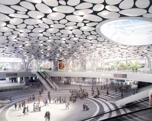

新景觀門戶：綠色生態與數位幾何的融合

新高雄車站由享譽國際的荷蘭建築師團隊 Mecanoo 親自操刀設計。面對鐵路地下化後的都市縫合課題，建築師不再將車站視為單純的交通轉運站，而是將其定位為「具備生態意識的市民集會廣場」，為高雄打造一座綠意盎然的都市中心客廳。
整體規劃不僅向未來展望，更向歷史致敬。將建於 1941 年的高雄舊車站帝冠式建築「歷史站體」重新校對中軸線、移回原址，與現代化的新站體並存，形成歷史與當代空間相嵌的特殊地景。
最令空間設計師讚嘆的，莫過於地下大廳頂棚的「雲朵天花板」。這座巨大的有機弧形天棚，由無數塊純白且帶有圓形燈飾的曲線金屬板拼接而成。設計靈感源自台灣傳統廟宇的「燈籠」，陽光透過頂棚天窗灑落，在地下空間營造出如同在樹蔭下乘涼、光影斑駁的流動感，徹底打破傳統地下車站陰暗、壓迫的刻板印象。
地面層規劃為寬敞的徒步區與市民廣場，流線型的廊道設計引導著四方行人的動線。這裡種植了大量在地原生樹種，除了具有實質的微氣候調節與遮蔭功能外，更為密集的都市水泥叢林注入一片生態綠洲。
新車站的頂部是一座綿延起伏的「空中花園步道」，與高雄長達 15 公里的鐵路綠園道完美串聯。市民與觀光客可以騎乘自行車或散步直接登上車站頂端，從高處俯瞰高雄這座港都城市的現代天際線。